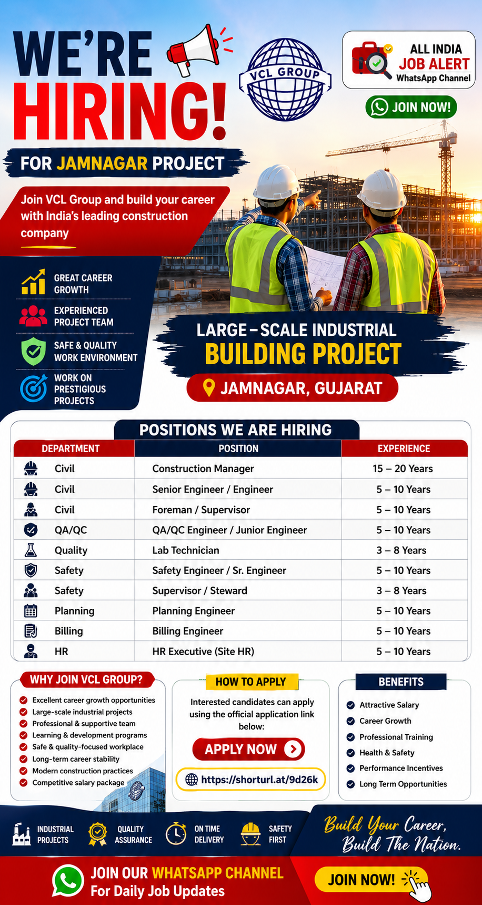

VCL Group has announced a new recruitment drive for experienced construction professionals for its large-scale Industrial Building Project at Jamnagar, Gujarat. The company is inviting applications from experienced candidates in Civil Engineering, QA/QC, Safety, Planning, Billing and HR departments. Candidates with relevant industrial building project experience are encouraged to apply.
This recruitment offers excellent career growth opportunities for professionals who have experience in large construction projects. Selected candidates will get an opportunity to work on one of the prestigious industrial construction projects in Gujarat with experienced project teams and modern construction practices.
| Department | Position | Experience |
|---|---|---|
| Civil | Construction Manager | 15-20 Years |
| Civil | Senior Engineer / Engineer | 5-10 Years |
| Civil | Foreman / Supervisor | 5-10 Years |
| QA/QC | QA/QC Engineer / Junior Engineer | 5-10 Years |
| Quality | Lab Technician | 3-8 Years |
| Safety | Safety Engineer / Sr. Engineer | 5-10 Years |
| Safety | Supervisor / Steward | 3-8 Years |
| Planning | Planning Engineer | 5-10 Years |
| Billing | Billing Engineer | 5-10 Years |
| HR | HR Executive (Site HR) | 5-10 Years |
VCL Group is a well-known construction company involved in executing large-scale industrial, commercial and infrastructure projects across India. The company focuses on delivering quality projects while maintaining high standards of safety, engineering excellence and timely execution. With experienced professionals and modern construction technology, VCL Group has built a strong reputation in the construction industry.
The Jamnagar Industrial Building Project is one of the important projects where experienced professionals are required in Civil, QA/QC, Safety, Planning, Billing and HR departments. Candidates joining this project will get an opportunity to work on modern industrial construction with experienced engineers, project managers and technical teams.
Selected candidates will be responsible for planning, execution, quality control, safety management and timely completion of project activities. Civil engineers will supervise construction activities, Planning Engineers will prepare project schedules, Billing Engineers will manage BOQs and client billing, QA/QC Engineers will ensure quality standards, Safety Engineers will monitor site safety and HR Executives will manage manpower and site administration.
The company expects candidates to maintain quality, safety and productivity while coordinating with different departments for smooth project execution. Strong technical knowledge and problem-solving skills will help candidates succeed in this role.
Salary will be offered according to the candidate's experience, qualifications and interview performance. Employees may also receive opportunities for career growth, professional learning, exposure to large-scale industrial projects and a professional working environment.
Interested candidates can apply through the official application link provided by the company. Before applying, make sure your resume is updated with your latest qualifications, work experience and contact details. Only eligible candidates with relevant experience should apply for the suitable position.
Official Apply Link:
https://shorturl.at/9d26k
1. Which company is hiring?
VCL Group.
2. Where is the project located?
Jamnagar, Gujarat.
3. What is the required experience?
3 to 20 years depending on the position.
4. What is the job type?
Full Time.
5. How can I apply?
Apply using the official application link.
6. Is industrial project experience preferred?
Yes.
7. Which departments are hiring?
Civil, QA/QC, Safety, Planning, Billing and HR.
8. Is salary mentioned?
Salary will be offered as per experience and company policy.
9. What documents are required?
Resume, educational certificates, experience certificates and ID proof.
10. Will only shortlisted candidates be contacted?
Yes.
Get daily private jobs, government jobs and walk-in interview updates directly on WhatsApp.
Join WhatsApp Channel